NeurIPS 2026
LumaFlux
Physically & Perceptually Guided Diffusion Transformers
for Inverse Tone Mapping
Shreshth Saini
Laboratory for Image & Video Engineering (LIVE) · The University of Texas at Austin
Advised by Prof. Alan C. Bovik
Can we teach a generative model
the physics of light?
SDR→HDR reconstruction is ill-posed. We need physical priors and perceptual guidance — not just more data.
What Happens When HDR Becomes SDR
The forward pipeline from HDRTVNet (ICCV '21) — every step is lossy, and inverting it is ill-posed
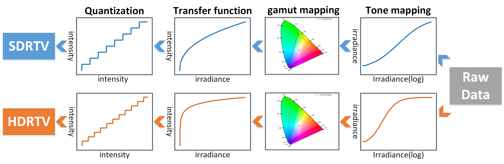
HDRTVNet pipeline: Raw Data → Tone Mapping → Gamut Mapping → Transfer Function → Quantization. Top (blue) = SDR. Bottom (orange) = HDR.
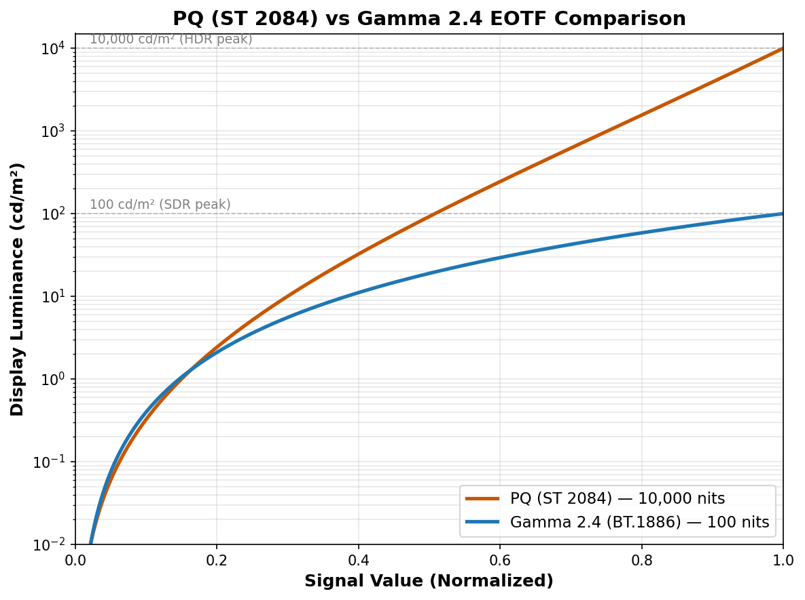
Luminance Compression
PQ maps 0–10,000 cd/m². Gamma tops at 100 cd/m². SDR clips 99% of the luminance range. Highlights → flat white. Shadows → crushed black. 8-bit quantization → banding.
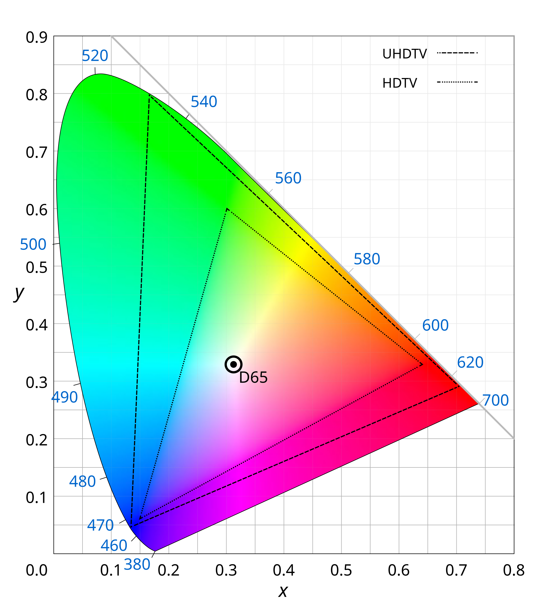
Color Gamut Compression
BT.2020 (UHDTV, dashed outer) covers 75.8% of CIE. BT.709 (HDTV, dotted inner) covers only 35.9%. Over half the color volume is discarded — saturated greens, deep reds, vivid cyans lost irreversibly.
What Gets Lost: 10-bit HDR vs 8-bit SDR (Beyond8Bits Dataset)
Split-view from our Beyond8Bits dataset — HDR (upper-left) vs SDR (lower-right) of the same frame

Refrigerator scene (top-left): SDR crushes shadow detail inside the fridge — metallic shelving and contents disappear to black. HDR reveals all internal structure.
Autumn lake (top-right): SDR desaturates the vivid fall foliage and loses the cloud detail in the sky. HDR preserves the full color volume and highlight gradations in the water reflection.
Crystal close-up (bottom): SDR clips the specular highlights on the gemstone to flat white. HDR preserves the translucent internal structure and surface reflections.
Real HDR Videos in Yxy Space: What SDR Clips
Computed from real 10-bit PQ BT.2020 videos (Beyond8Bits). Red prism = Rec.709 SDR volume (≤100 nits). Orange dots = pixels outside SDR — lost in tone mapping.
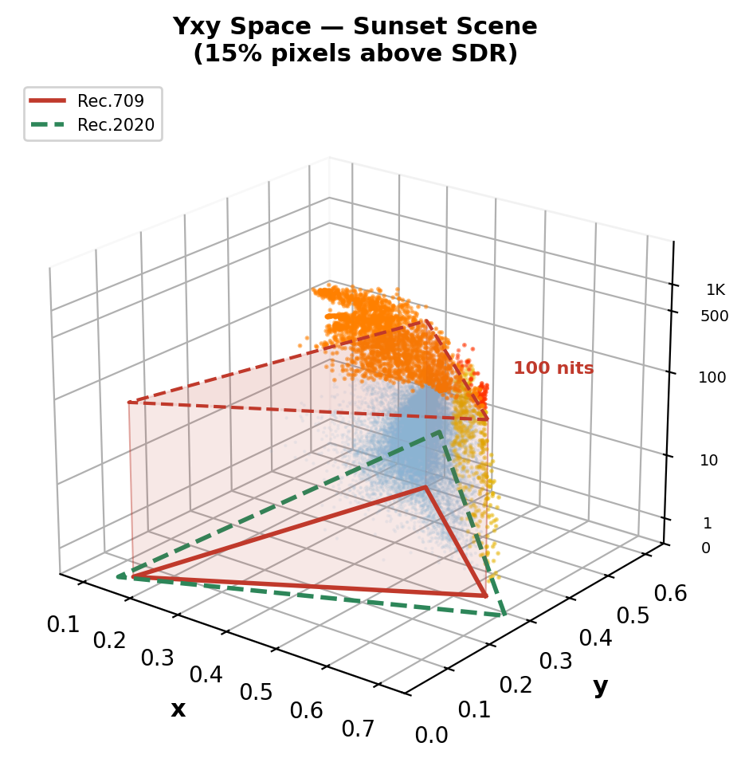
Sunset scene: 15% pixels above SDR ceiling. Sun flare + specular highlights on grass reach ~1,300 nits.
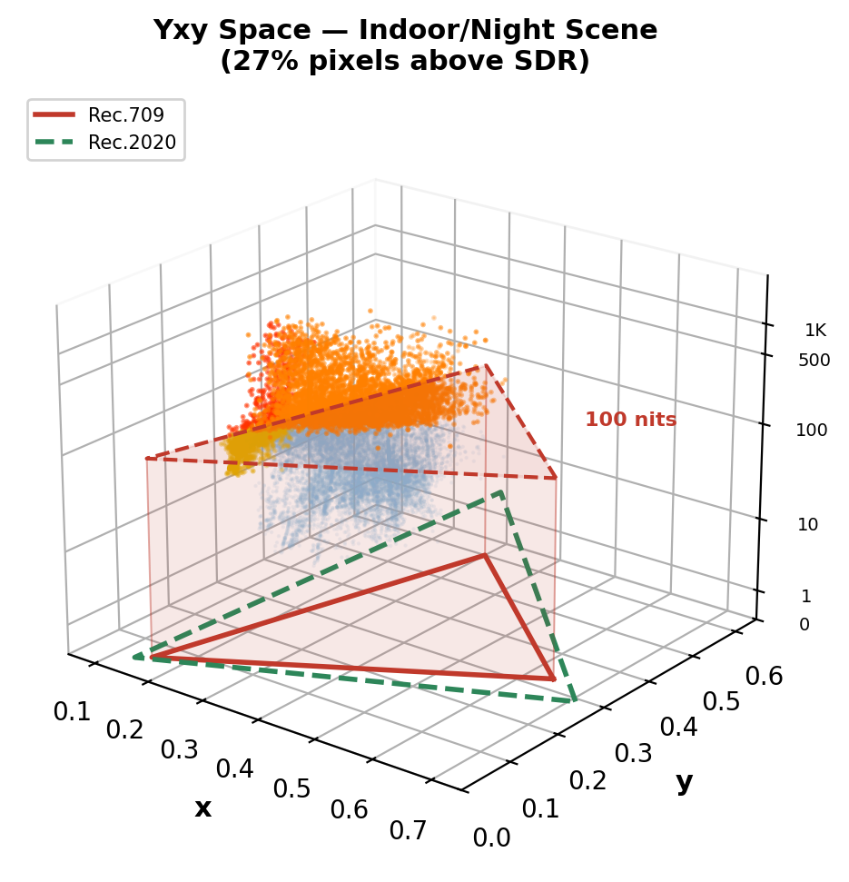
Indoor/night scene: 27% pixels above SDR ceiling. Bright artificial lights reach ~2,600 nits — massive clipping.
Key insight: 15–27% of HDR pixel information is permanently destroyed by SDR conversion — and the loss is concentrated in the most perceptually important regions: highlights, specular reflections, light sources, and wide-gamut colors. This is what ITM must reconstruct.
Why ITM Is Fundamentally Ill-Posed
Three irreversible losses make exact inversion impossible — any method must hallucinate missing information
1. Many-to-One Mapping
Forward tone mapping is surjective: multiple distinct HDR luminance values (e.g., 500, 2000, 8000 cd/m²) all map to the same clipped SDR code value (255). The inverse has infinite solutions — the mapping is non-invertible.
2. Color Gamut Loss
BT.2020 → BT.709 gamut mapping discards 53% of the color volume. Saturated greens, deep reds, and vivid cyans in the wide gamut are compressed into the sRGB triangle. The original chroma information cannot be recovered from the compressed representation.
3. Quantization Loss
10-bit PQ (1024 levels) → 8-bit gamma (256 levels) destroys fine gradations. In shadows, adjacent PQ code values are 4× further apart in 8-bit, causing visible banding/contouring. In highlights, the entire upper luminance range collapses to a few code values.
Any ITM method must hallucinate plausible HDR detail where SDR has none.
This requires content-aware generative priors — not fixed curves or local CNN features.
Prior ITM Methods: Three Generations of Architectures
From hand-crafted curves to CNNs to diffusion — each generation has fundamental limits
Gen 1: Classical Tone Curves
BT.2446, Reinhard, Huo et al. — Fixed parametric mapping from SDR→HDR using inverse tone curves. Content-blind: the same curve is applied to sunsets, interiors, and neon signs. Cannot recover scene-specific highlights or local contrast.
Gen 2: CNN-Based Learning
HDRTVNet++ (ICCV'21): 3-branch modulation net (global, local, condition). HDCFM (MM'22): Hierarchical feature modulation with dynamic context. HDRTVDM (CVPR'23): Dynamic context transformation. Deep SR-ITM (ICCV'19): Joint super-resolution + ITM.
Limitation: Local receptive fields → cannot model global illumination. Overfit to specific TMOs used in training data.
Gen 3: Diffusion-Based
LEDiff: Latent diffusion conditioned on SDR. PromptIR: Text-guided restoration. FlashVSR: Video super-resolution with diffusion prior.
Limitation: Hue shifts, over-saturated tones, hallucinated details. No physical grounding — the model has no concept of luminance or color space.
Gen 4: LumaFlux (Ours)
Physically & perceptually guided Diffusion Transformer. Frozen 12B Flux backbone + lightweight PGA/PCM modules. First to combine physical priors + perceptual guidance + DiT scale.
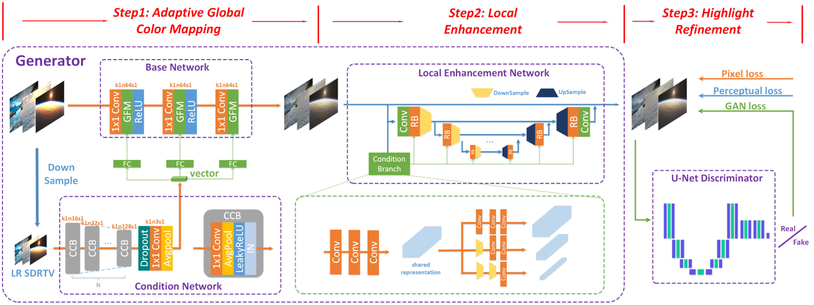
HDRTVNet++ (Chen et al., TMM'23): 3-step CNN pipeline — adaptive global color mapping → local enhancement → highlight refinement. All operations are local (conv + FC layers). No global scene understanding.
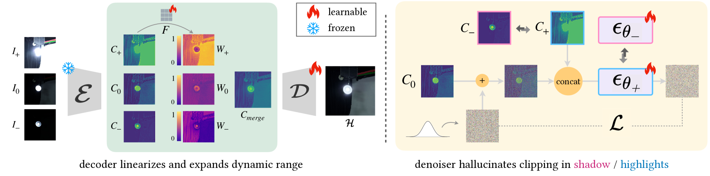
LEDiff (Wang et al., CVPR'25): Latent exposure fusion — encoder produces multi-exposure latents, learnable fusion in latent space, separate shadow/highlight denoisers. No physical priors, prone to hue shifts.
What LumaFlux does differently
Instead of CNN local ops or latent fusion tricks, we inject physical priors (luminance, spectral) and perceptual guidance (SigLIP) directly into a frozen 12B DiT backbone via lightweight adapters.
Where Prior ITM Methods Break
Classical (Reinhard, BT.2446)
Fixed tone curves. Content-blind. Cannot recover scene-specific highlights.
CNN-based (HDRTVNet++, HDCFM, ICTCPNet)
Limited receptive field. Overfit to fixed tone operators. No global scene understanding.
Diffusion-based (LEDiff, PromptIR)
Color drift & hallucination. Require text prompts or retraining. No physical grounding.
What's missing?
No method uses physical priors (luminance, spectra).
No method uses perceptual priors (semantic understanding).
No method leverages modern DiTs (12B pretrained params).
| Method | Type | PSNR | Limitation |
|---|---|---|---|
| BT.2446 | Classical | — | Content-blind |
| HDRTVNet++ | CNN | 38.36 | Local receptive field |
| HDCFM | CNN | 38.42 | Fixed degradations |
| LEDiff | Diffusion | 36.52 | Color drift |
| PromptIR | Diffusion | 32.14 | Needs prompts |
| LumaFlux | DiT | 39.27 | Physics-guided |
Prior ITM Methods: Visual Failures
Visual comparison on real HDR dataset — from FastHDRNet (arXiv 2404.04483)
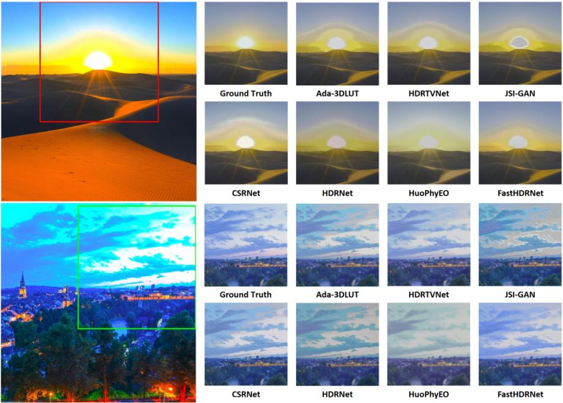
Desert sunset (top) + evening cityscape (bottom). Ground Truth vs 7 methods: Ada-3DLUT, HDRTVNet, JSI-GAN, CSRNet, HDRNet, HuoPhyEO, FastHDRNet.
Color shift & washout
Ada-3DLUT & HDRTVNet wash out the sun and lose sand gradients. HDRNet introduces severe blue color shift on the cityscape. HuoPhyEO produces unnatural yellow-green cast.
Halo & detail loss
JSI-GAN adds halo artifacts around the sun disc. CSRNet and JSI-GAN lose building detail and city lights in shadow regions. No method recovers both highlights and shadows.
The common pattern
CNN methods lack global context. Analytical methods lack content-awareness. No prior method uses physical priors or perceptual guidance — the exact gap LumaFlux fills.
Background Flow Matching in 4 Equations
The generation framework behind Flux and LumaFlux
1. Interpolation Path
data → noise, straight line
2. Target Velocity
Constant — network learns to predict this
3. Training Loss
Simple MSE: predicted vs true velocity
4. Inference: Solve ODE
t=1→0 via Euler. Deterministic, no noise.
Color: data x₀ · noise x₁ · interpolant xₜ · time t · network vθ
Background Rectified Flow: Straight Paths vs. Noisy Diffusion
Why LumaFlux uses rectified flow (Flux) instead of standard diffusion
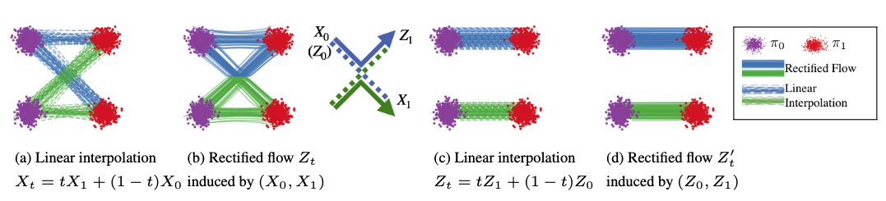
From Liu et al. (ICLR '23): (a) Linear interpolation has crossing paths. (b) Rectified flow straightens them via reflow. (c-d) After rectification, paths are straight ≈ optimal transport. Figure from official Rectified Flow repo.
Diffusion (SDE) — Curved, Noisy Paths
Stochastic noise at each step provides implicit error correction. Paths curve and cross. Requires 50+ steps. Models: DDPM, Stable Diffusion 1.5/2.
Rectified Flow (ODE) — Straight, Fast Paths
Deterministic ODE. Paths straightened via reflow ≈ optimal transport. Only 25-40 steps. Consistent outputs. Models: Flux (12B), SD3, SD3.5. LumaFlux builds on Flux.
Why this matters for ITM: Rectified flow gives us deterministic, consistent HDR outputs (no stochastic variation between runs) and fast inference (~8s/frame). The 12B Flux backbone provides rich visual priors from billions of training images — we just need to steer them with physics.
Background Flux MM-DiT & Why Standard LoRA Isn't Enough
Flux Architecture
12B-param MM-DiT. Visual + text tokens processed jointly via self-attention. Timestep conditioning via adaLN-Zero. Rectified flow ODE, 40 steps.
Standard LoRA
Rank r=8. Only 0.07% of parameters. Efficient but static.
Why vanilla LoRA fails for ITM
Same adaptation for all inputs, timesteps, layers.
No physics: blind to PQ curves, luminance, spectra.
No perception: can't enforce color constancy.
Result: 33.42 dB PSNR (baseline).
LumaFlux: From LoRA to Luma-MMDiT
Three extensions that make LoRA input-dependent, physically-grounded, and timestep-adaptive:
PGA — Physical gating on value projection
PCM — Perceptual FiLM on hidden states
RQS — Monotone spline tone-field decoder
TLAM — 6 scalars per (timestep, layer)
33.42 → 39.27 dB PSNR (+5.85 dB)
Architecture Evolution: CNN → MMDiT → Luma-MMDiT
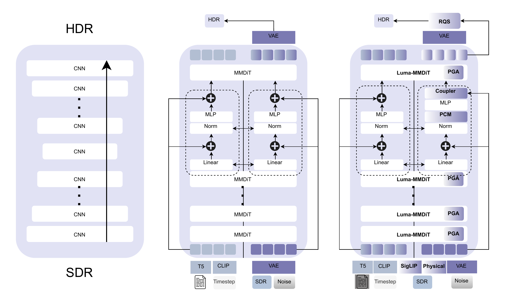
Left: CNN stack (local receptive field). Center: Standard Flux MMDiT (global attention but no physical priors). Right: LumaFlux (PGA + PCM + Coupler + RQS).
CNN: Local, no physical priors, no global context
MMDiT: Global attention, 12B priors, but static LoRA, no physics
Luma-MMDiT: + SigLIP + Physical features + spectral gating + RQS
LumaFlux: Full Pipeline
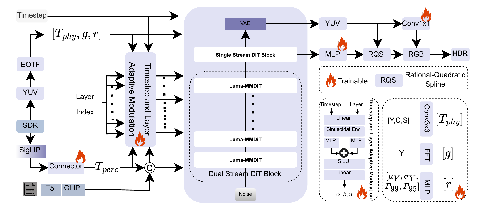
PGA
Luminance + gradient + saturation + FFT → gated LoRA on WV
PCM
Frozen SigLIP → cross-attn → FiLM: γ⊙LN(h)+ζ
TLAM
Ψ(t,ℓ) → 6 scalars controlling all modules per step/layer
RQS
K=8 monotone spline in YUV BT.2020. Per-pixel tone curves.
Standard DiT Block → Luma-MMDiT Block
Three targeted modifications — only colored parts are trainable (~17M / 12B)
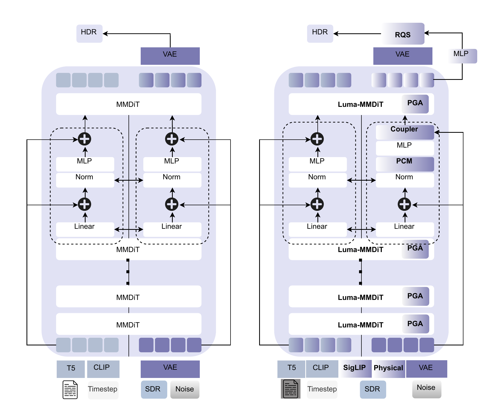
Left: Standard MMDiT. Right: Luma-MMDiT with PGA on value projection, PCM after norm, Coupler at output.
// Standard MMDiT block
z → LN(z)
Q = zWQ, K = zWK
V = zWV
h = Attn(Q,K,V)
z = z + h + MLP(LN(z))
// + Luma-MMDiT:
V = z(WV0 + Rvt,ℓ) ← PGA
h = γt,ℓ⊙LN(h) + ζt,ℓ ← PCM
z += λ(WpTphys + WcC(Tperc)) ← Coupler
TLAM: Ψ(t, ℓ) → 6 scalars
[αpga, βpga, αpcm, βpcm, nspec, λ]
Early steps → global tone. Late steps → highlight detail.
PGA: Physically-Guided Adaptation — Step by Step
Step 1: Extract physical features
Step 2: Physical & spectral gating
Step 3: Modulated LoRA
Three multiplicative modulations:
TLAM (α, β) — Timestep-layer scaling. Early = global tone. Late = highlights.
Gphys — Per-head luminance-aware gating. Sigmoid: 0=suppress, 1=pass.
gFFT — Frequency-aware gating. Prevents over-expansion in smooth (low-freq) regions.
Key property: Unlike standard LoRA (static), PGA is input-dependent, timestep-adaptive, and frequency-aware. The same image region gets different adaptation at different diffusion timesteps.
PCM (Perceptual) & RQS (Decoder)
Perceptual Cross-Modulation
FiLM: scale & shift per dimension after layer norm. Enforces color constancy — e.g., brighten sky highlights without shifting skin tones.
RQS Tone-Field Decoder
K=8 knots, per-pixel learned (ξ, η, s).
Monotonic — preserves luminance ordering.
Differentiable & invertible.
Operates in YUV BT.2020 — separates luminance from chroma.
Total Loss
1.0·‖Ylin−Y*‖₁ + 0.5·‖xlin−x*‖₁ + 0.01·LsplineSpline Smoothness
Lspline = 1/(K−1) Σ(sk+1−sk)²Luminance (primary) + color (secondary) + curve smoothness (regularization). All in linear light (PQ EOTF decoded).
Training: Data & Configuration
~318K paired SDR-HDR images
| Source | Clips | Type |
|---|---|---|
| HIDRO-VQA | 411 | Professional |
| CHUG | 428 | User-generated |
| LIVE-TMHDR | 40 | Studio + expert SDR |
8 TMOs × 3 CRF levels
Reinhard · BT.2446a · BT.2446c+GM · BT.2390+GM · YouTube LogC · OCIOv2 · HC+GM · Expert Graded
Training Configuration
Backbone: Frozen Flux (12B) · Trainable: ~17M params
Optimizer: AdamW · lr=1e-4 · cosine + 5K warmup
Iterations: 200K · batch 16 · 4×H200 · ~48 GPU-hours
Inference: 40 Euler steps · prompt-free · ~8s per 1080p
Evaluation Benchmarks
HDRTV1K
1K pairs, 1080p
HDRTV4K
4K resolution
Luma-Eval
20 unseen · 8 TMOs
New benchmark
Metrics: PSNR (PQ), SSIM, HDR-VDP-3, ΔEITP (ICtCp color difference)
Results: State-of-the-Art on All Benchmarks
| Method | 1K PSNR↑ | 1K SSIM↑ | 4K PSNR↑ | VDP3↑ | ΔEITP↓ |
|---|---|---|---|---|---|
| HDRTVNet++ | 38.36 | 0.973 | 30.82 | 8.75 | 8.28 |
| ICTCPNet | 36.59 | 0.922 | 33.12 | 8.57 | 7.79 |
| HDCFM | 38.42 | 0.973 | 33.25 | 8.52 | 7.83 |
| LEDiff | 36.52 | 0.872 | 32.25 | 5.71 | 9.13 |
| PromptIR | 32.14 | 0.954 | 28.48 | 9.17 | 9.59 |
| LumaFlux | 39.27 | 0.982 | 35.86 | 9.83 | 6.12 |
HDRTV1K
HDRTV4K
(best)
(best color)
First DiT-based ITM to beat all CNN & diffusion baselines. Strong 4K generalization despite 1080p training. Only ~17M trainable parameters on 12B frozen backbone.
Visual Result 1: Church Interior — Highlight Recovery
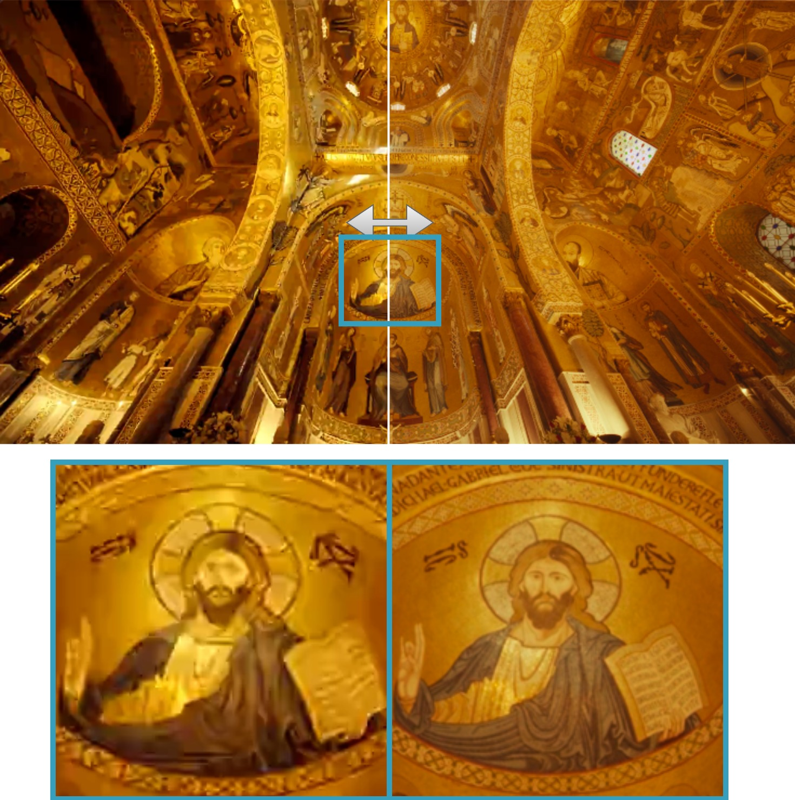
SDR Input (left half)
Stained-glass window clips to flat white. Gold ceiling mosaics lose all texture. 8-bit gamma collapses the entire highlight range.
LumaFlux HDR Output (right half)
Window highlights show gradual luminance roll-off. Gold leaf textures fully resolved. Zoomed inset reveals mosaic detail invisible in SDR.
Why this matters
~3 stops of highlight info destroyed by SDR clipping. PGA selectively expands highlights while PCM preserves warm color temperature of the gold mosaic.
Visual Result 2: Shanghai Cityscape — Shadow & Neon Recovery
SDR input (left) vs LumaFlux HDR output (right) — split view with zoomed crop below

SDR input (left half)
Pudong waterfront is near-black. Neon signs washed out. Zoomed crop shows boat and tower as indistinguishable dark blobs.
LumaFlux output (right half)
Neon signs vivid with accurate colors. Water reflections reveal full skyline. Zoomed crop shows sharp boat details, tower structure, and signage.
How LumaFlux handles this
PGA spectral gating amplifies shadow signal without artifacts. RQS decoder expands shadows/highlights via per-pixel monotone splines. PCM maps neon colors to correct BT.2020 gamut.
Ablation: Every Component Is Justified
Progressive addition of components on Luma-Eval benchmark (100K iterations)
| Configuration | PSNR↑ | ΔEITP↓ | VDP3↑ | ΔPSNR |
|---|---|---|---|---|
| Flux + LoRA | 33.42 | 8.58 | 7.82 | — |
| + PGA (no spectral) | 34.94 | 7.62 | 8.18 | +1.52 |
| + spectral gating | 35.18 | 7.31 | 8.29 | +0.24 |
| + PCM | 35.89 | 6.78 | 8.46 | +0.71 |
| + RQS (linear) | 35.72 | 6.85 | 8.41 | −0.17 |
| + RQS (monotone) | 35.98 | 6.09 | 8.61 | +0.26 |
Total: +2.56 dB over vanilla LoRA baseline
ΔPSNR contribution breakdown
Key findings
PGA is the largest contributor (+1.52 dB) — physical luminance features are critical. PCM adds +0.71 dB — perceptual semantics complement physics. RQS monotone > linear — monotonicity constraint prevents tone reversal and improves ΔEITP by 0.76.
User Study: Expert Perceptual Evaluation
10 experts, 10 HDR clips, 5-point MOS on calibrated HDR display (LG OLED, 1000 nits)
LumaFlux wins on all three criteria
Color fidelity: 4.5/5 — experts noted accurate neon reproduction, no hue shifts, stable skin tones. Overall: 4.2/5 — highest across brightness, color, and overall quality.
LEDiff is competitive on overall (4.0)
But loses on brightness (3.1 vs 3.8) — diffusion hallucination produces plausible-looking but physically inaccurate luminance. LumaFlux's PGA prevents this.
Classical BT.2446c trails on everything
Content-blind tone curves cannot compete with learned, physically-guided reconstruction. Overall: 2.7/5.
What We Learn & Remaining Challenges
Key insights
- Physical conditioning is the largest contributor (+1.52 dB from PGA alone). Luminance-aware gating is more valuable than semantic priors for ITM.
- Spectral gating prevents over-expansion in smooth regions. Frequency analysis is a natural complement to spatial features.
- Monotone RQS outperforms linear expansion. Enforcing physical constraints (monotonicity) improves both metrics and perceptual quality.
- ~17M parameters suffice to adapt a 12B backbone. The pretrained visual priors in Flux are extremely powerful — the key is steering them with physics.
Remaining challenges
- No temporal consistency — frame-by-frame processing. Video ITM needs temporal attention.
- VAE bottleneck — Flux VAE is trained for SDR. Fine-grained HDR detail may be lost in latent space.
- Inference speed — 40 ODE steps at ~8s/frame. Not yet real-time. Distillation is a clear next step.
Key Takeaways
First physically-guided DiT for inverse tone mapping. Luminance, gradients, spectra injected directly into attention via gated LoRA.
~17M trainable on 12B frozen. Parameter-efficient adaptation that preserves Flux's visual priors while adding physical grounding.
SOTA on all benchmarks, all metrics. +0.85 dB HDRTV1K, +2.61 dB HDRTV4K. 91% human preference over classical methods.
RQS decoder ensures physically valid tone expansion. Monotone, differentiable, per-pixel — eliminates banding while preserving highlights.
Next: Temporal LumaFlux for video · Model distillation for real-time · HDR-Q as perceptual reward model for LumaFlux → closing the perception-generation loop.